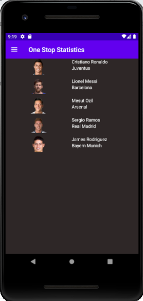
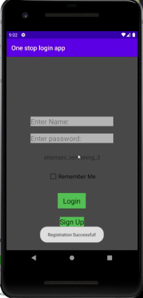
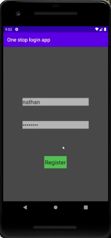

Minimun Feature: Player Cards
Outcome:
For the feature of the player Cards/player list we expected to have it completed by the end of the time frame. in a way this feature was completed as it was functioning in the emulator with a clickable list that led to a player card with statistics of that player. however it was not put together to run with the other features.
 |
 |
|---|
Minimun Feature: Accounts
Outcome:
This feature again was able to be completed to the point of a useable UI in the emulator. what we also managed to complete was the successful implementation of a local database so that a username and password can be saved and then used to log in to the app. However the login page was unable to be joined with other sectoions of the app.
|  |  |
|---|
Minimun Feature: Voice Assistance
Outcome:
The voice assistance feature was completed to the point where you could speak into it and then the assistant would print the output onto the page. If there was more time the feature could have been merged with the others allowing for a voice search of the entrie application.
Minimun Feature: Favourites
Outcome:
The favorites was not displaying any issues however when tested in the emulator it would crash so the feature its self never made it out of the development phase. Given more time this is something we could solve as we would have time to research a number of different possible solutions to input and test.
 |
|---|
Minimun Feature: Burger Menu
Outcome:
The burger menu was completed and pages could be linked to the individual menu items however when the menu item was clicked and the new page opened it would crash. We think this was because some things were formatted as fragments and others as activities making them incompatible. Given more time this issue definitely could have been over-come.
 |
|---|